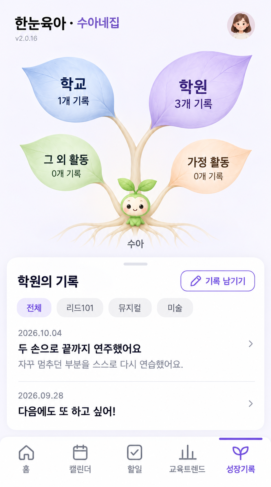

<!doctype html><html lang="ko"><meta charset="utf-8"><meta name="viewport" content="width=device-width,initial-scale=1"><title>성장기록 · 레퍼런스 반영 수정안</title><style>body{margin:0;background:#ece9f0;color:#51465f;font:14px/1.7 -apple-system,sans-serif}main{display:flex;align-items:flex-start;justify-content:center;gap:28px;padding:24px}img{width:390px;max-width:100%;height:auto;border-radius:18px;box-shadow:0 8px 35px #51465f18}aside{max-width:280px;background:white;border-radius:16px;padding:20px}h1{font-size:20px}p{margin:12px 0}@media(max-width:760px){main{flex-direction:column;align-items:center}aside{max-width:350px}}</style><main><a href="screen.png"></a><aside><h1>레퍼런스 반영 수정안</h1><p>자연스럽게 갈라지는 곡선 가지와 뿌리, 볼륨감 있는 잎, 첨부 시안 스타일의 작은 새싹 캐릭터로 다시 제작했습니다.</p><p>나무 영역을 낮춰 기록 카드가 함께 보이도록 했습니다. 작은 잎 없이 메인 잎 네 개로 구성합니다.</p><p>학교 1개 · 학원 3개 · 그 외 활동 0개 · 가정 활동 0개는 비교용 예시입니다. 메인 잎 크기는 저장된 성장기록 수에 따라 달라집니다.</p><p>이미지 디자인 시안입니다. 실제 DB 연결·앱 적용·배포는 아직 하지 않았습니다.</p></aside></main></html>
